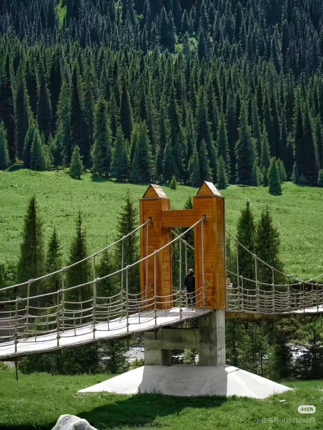
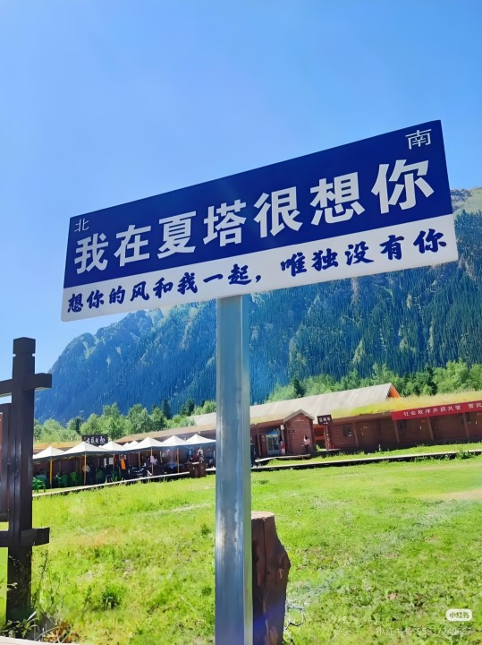

古道概览
夏塔古道，位于新疆伊犁昭苏县，是古代丝绸之路上一条险峻而重要的通道。它沟通天山南北，连接着南疆的温宿县和北疆的昭苏县，也是唐代著名高僧玄奘法师取经东归时所经之路。如今，这里以其原始、壮丽的自然风光和深厚的历史文化底蕴，成为徒步旅行者和探险爱好者的圣地。

壮丽自然风光
夏塔古道穿越天山主脉，沿途可见巍峨的雪山、广袤的冰川、清澈的溪流和辽阔的草原，构成了一幅绝美的自然画卷。

深厚历史人文
作为古丝绸之路的一部分，这里承载着千年的历史记忆。行走其间，仿佛能听到古代商队的驼铃声，感受到玄奘法师的坚毅与智慧。
终极徒步体验
对于户外爱好者来说，夏塔古道是一条极具挑战性的徒步路线。它不仅考验体力，更能带来无与伦比的成就感和心灵震撼。